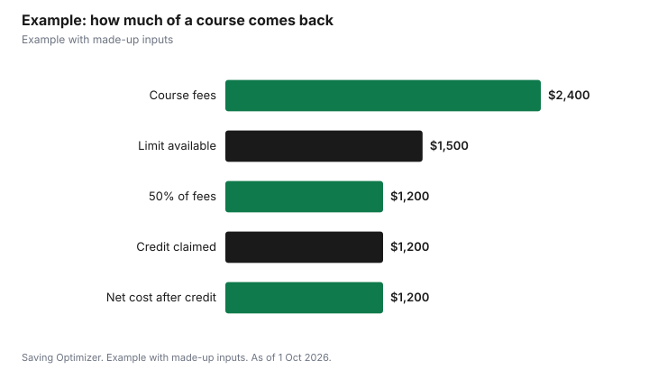

Education · Canada
Canada Training Credit: How to Claim Your $250 a Year, Step by Step
The Canada training credit is a refundable federal tax credit that pays back up to half of what you spend on eligible courses, up to a limit that grows by $250 for each year you qualify. To claim it, look up your Canada training credit limit on your latest notice of assessment, pay eligible tuition or exam fees, and complete Schedule 11 with your return. You claim the lesser of your limit and 50% of the eligible fees, and you enter the result on line 45350. Because the credit is refundable, you can get it back even if you owe no tax. The catch is the age window, 26 to 65, and the yearly income tests you must pass to build room in the first place.
Key takeaways
- You claim the lesser of your limit and 50% of eligible fees.
- Room grows by $250 a year if you qualify, to a $5,000 lifetime maximum.
- For 2025, building room required at least $12,058 of working income and net income of $177,882 or less.
- You must be at least 26 and under 66 at the end of the year.
- Your limit is on your notice of assessment; claim on line 45350 using Schedule 11.
- Example with made-up inputs: a $2,400 course with $1,500 of room returns $1,200.
How the credit works
The Canada Revenue Agency describes the credit in two parts. First, there is a running balance called your Canada training credit limit, or CTCL. Each year you file a return, the CRA reviews the criteria and adds $250 to your limit if you qualify, up to a maximum of $5,000 over your lifetime. Second, there is the claim itself: in a year when you pay for eligible courses, you can claim an amount up to the lesser of your limit for that year and 50% of the eligible tuition and fees. Whatever you claim then comes off your limit for future years.
The CRA also notes that you can keep building room in a year when you claim. Even if you use your limit in 2026, you can still accumulate $250 toward 2027 if you meet the conditions. The CRA's guide for students gives the formula as A + B − C, where A is your limit for the previous year, B is the $250 accumulation if you met all the conditions (otherwise zero), and C is the credit you claimed in the previous year.
| Rule | What the CRA says |
|---|---|
| Type of credit | Refundable |
| Room added each year | $250, if you meet the conditions |
| Lifetime maximum | $5,000 |
| Age to claim | At least 26 and less than 66 at the end of the year |
| Amount you can claim | The lesser of your limit and 50% of eligible fees |
| Where to find your limit | Your latest notice of assessment or reassessment |
| Where to claim | Schedule 11, line 5, carried to line 45350 |
| Effect on future room | The credit you claim reduces your limit |
Who builds $250 of room each year
Room does not appear automatically for everyone. The CRA's guide for 2025 says you could accumulate $250 toward your 2026 limit only if you met all of these conditions in 2025: you filed a return, you were resident in Canada throughout the year, you were at least 26 and under 66 at the end of the year, you had at least $12,058 of working income (which includes maternity and parental benefits), and your net income for the year was not more than $177,882.
| Condition | 2025 test |
|---|---|
| File a return | Yes, for 2025 |
| Residence | Resident in Canada all of 2025 |
| Age at 31 Dec 2025 | At least 26 and under 66 |
| Working income | At least $12,058, including maternity and parental benefits |
| Net income | Not more than $177,882 |
Two practical points follow. Filing matters even in a low-income year: if you do not file, the CRA has nothing to review and you build no room. And the income floor means a year mostly out of work may not add room, while a year with a parental leave can, because the CRA counts maternity and parental benefits as working income for this test. The dollar thresholds can change from year to year, so check the current guide for the year you are filing.
Which fees count
The CRA says the credit applies to tuition and other fees paid to an eligible educational institution in Canada for courses you took in the year, or to certain bodies for an occupational, trade or professional examination, and the fees must otherwise be eligible for the tuition tax credit. An eligible institution is a university, college or other institution in Canada offering post-secondary courses, or an institution in Canada offering occupational skills courses that is certified by the federal minister of Employment and Social Development.
The CRA's list of eligible tuition fees includes admission fees, library and lab charges, exam fees that are part of a program, application fees if you then enrol, charges for a certificate, diploma or degree, and mandatory computer service fees. It excludes books, goods you keep, transportation and parking, board and lodging, and courses for academic upgrading that are not at the post-secondary level. Fees paid to each institution must total more than $100 to qualify. Fees paid or reimbursed by your employer, or paid by a government job training program, generally cannot be claimed unless the amount is included in your income.
| Usually eligible | Not eligible |
|---|---|
| Tuition and admission fees | Textbooks (except some correspondence course materials) |
| Library and lab charges | Equipment you keep, such as a computer |
| Exam fees integral to a program | Transportation and parking |
| Certificate, diploma or degree charges | Board and lodging |
| Licensing exam fees (with conditions) | Fees your employer paid and did not include in your income |
How to claim, step by step
- Sign in to your CRA account or check last year's notice of assessment for your Canada training credit limit.
- Collect your tuition slip (usually a T2202) or official receipt, and any exam fee receipt.
- Confirm you were at least 26 and under 66 on 31 December of the tax year.
- Complete the credit section of Schedule 11; it compares 50% of your eligible fees with your limit.
- Enter the amount from line 5 of Schedule 11 on line 45350 of your return.
- Claim your remaining tuition amount as usual on Schedule 11; the schedule handles how the two interact.
- Keep receipts in case the CRA asks; do not send them with an electronic return.
Tax software and the CRA's own forms walk through Schedule 11, so the main job is having the right slip and knowing your limit. If your notice of assessment shows a limit of $0, you cannot claim the credit that year, but you can still claim the regular tuition amount.
Example with made-up inputs
These numbers are an example with made-up inputs. Priya is 38 and has qualified for the $250 accumulation for six years, so her limit is $1,500. In 2026 she pays $2,400 for an eligible college certificate. Half of her fees is $1,200, which is less than her $1,500 limit, so she claims $1,200 on line 45350. Her limit drops to $300, and if she meets the conditions again in 2026, it rises by $250 to $550 for 2027. If she had paid $4,000 instead, half would be $2,000, so her claim would be capped at her $1,500 limit.
| Item | Amount |
|---|---|
| Limit going into 2026 | $1,500 |
| Eligible fees paid in 2026 | $2,400 |
| 50% of fees | $1,200 |
| Credit claimed (lesser of the two) | $1,200 |
| Limit left after the claim | $300 |
| Limit for 2027 if she qualifies again | $550 |

Timing your courses
Because room builds slowly and is capped at $5,000, it can pay to plan. If you have several years of room saved, one larger program can use it at once; if you have little room, spreading courses across tax years lets new room arrive in between. The limit you can use in a year is the one on your notice of assessment for the previous year, so the $250 you build this year is available next year, not this year. Remember the age window, too: room cannot be used after the year you turn 65.
For other ways to fund adult learning, see the Lifelong Learning Plan and free library courses. If you are writing a licensing exam, see professional exam fees and the tuition credit.
Sources
- Canada Revenue Agency, Line 45350 Canada training credit, canada.ca (Wayback copy of the page modified 20 Jan 2026), as of 1 Oct 2026.
- Canada Revenue Agency, Guide P105 Students and Income Tax 2025, canada.ca (Wayback copy of the page modified 6 May 2026), as of 1 Oct 2026.
- Canada Revenue Agency, Eligible tuition fees, canada.ca (Wayback copy), as of 1 Oct 2026.
- The learner's details, fees and limit in the example are an example with made-up inputs.
Frequently asked questions
How much is the Canada training credit?
You claim the lesser of your Canada training credit limit and 50% of eligible fees. The limit grows by $250 a year if you qualify, up to $5,000 in a lifetime.
Who can build room for the Canada training credit?
For 2025, you had to file a return, be resident in Canada all year, be at least 26 and under 66 at year end, have at least $12,058 of working income and have net income of $177,882 or less.
Where do I find my Canada training credit limit?
On your latest notice of assessment or reassessment, or in your CRA account.
How do I claim the Canada training credit?
Complete the credit section of Schedule 11 and enter the amount from line 5 on line 45350 of your return.
Is the Canada training credit refundable?
Yes. If the credit is more than your tax owing, you may get the difference as a refund.
Can exam fees count for the Canada training credit?
Yes, fees paid to certain bodies for an occupational, trade or professional examination can count if they are eligible for the tuition tax credit.
Researched and drafted with AI assistance and fact-checked against official Canadian sources. How we create content.
Disclosure: Saving Optimizer may earn a commission if a partner link is added later, such as a tax software offer type. No partnership is claimed on this page. Education only, not tax advice.